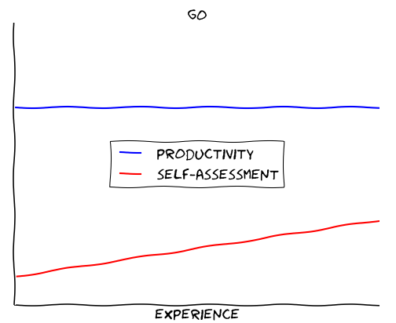
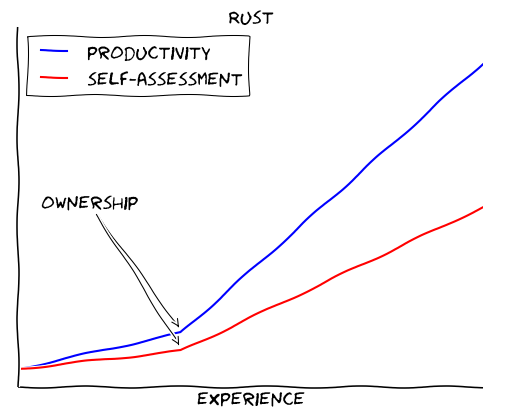

Go vs Rust? Choose Go.

"Rust or Go, which one should I choose?" is a question I get quite often. Both languages seem to be competing for the same user base and they both seem to be systems programming languages, so there must be a clear winner, right?
tl;dr: It's not so easy. Both languages have a different scope. Golang shines for writing microservices and for typical "DevOps" tasks, but it is not a systems programming language. Rust is stronger for tasks where concurrency, safety and/or performance are important; but it has a steeper learning curve than Go.
Go: practical, pragmatic, plain
I don't think Go is an elegant language. Its biggest feature is simplicity. Go is not even a systems programming language. While it's great for writing microservices and tooling around backend infrastructure, I would not want to write a kernel or a memory allocator with it.
But with Go, you get things done — fast.
Go is one of the most productive languages I've ever worked with.
The mantra is: solve real problems today.
Rust's strong guarantees come at a cost
Rust in comparison is hard. It took me many months to become somewhat productive. You need to invest a serious amount of time to see any benefit. Rust is already a powerful language and it gets stronger every day. It feels much more like a pragmatic Haskell to me than a safer C.
Don't get me wrong: I love Rust, and it helped me become a better programmer. It is certainly a nice language to learn. The big question is, if it is the right choice for your next major project.
Here's the thing: if you choose Rust, usually you need the guarantees, that the language provides:
- Safety against
Nullpointers, race conditions and all sorts of low-level threats. - Predictable runtime behavior (zero cost abstractions and no garbage collector).
- (Almost) total control over the hardware (memory layout, processor features).
- Seamless interoperability with other languages.
If you don't require any of these features, Rust might be a poor choice for your next project. That's because these guarantees come with a cost: ramp-up time. You'll need to unlearn bad habits and learn new concepts. Chances are, you will fight with the borrow checker a lot when you start out.
Case-study: Primality by trial division
Let's say, you want to check if a number is prime. The easiest way is to check if we can divide the number by any smaller natural number (without a remainder). If not, we found a prime number! This approach is called trial division.
Here's how to do that in Golang (courtesy of Rosetta Code):
func IsPrime(n int) bool {
if n < 0 {
n = -n
}
switch {
case n < 2:
return false
default:
for i := 2; i < n; i++ {
if n%i == 0 {
return false
}
}
}
return true
}
And here's the same thing in Rust:
pub fn is_prime(n: u64) -> bool {
match n {
0...1 => false,
_ => {
for d in 2..n {
if n % d == 0 {
return false;
}
}
true
}
}
}
At first sight, both solutions look pretty similar. But if we look closer, we can spot some differences.
- In Go, we use a simple switch-case statement. In Rust, we use a
matchstatement, which is much more powerful. - In Go, we use a simple for-loop to iterate over the numbers 2 to n. In Rust, we use a range expression (
2..n). - In Go, we use two
returnstatements, in Rust we have onereturnexpression. In general, most things in Rust are expressions, which can be returned and assigned to a variable. Read more about expressions here.
In many areas, Rust is more functional than Golang. You could rewrite the above code using the any method, which is implemented for Range.
fn is_prime(n: u64) -> bool {
match n {
0...1 => false,
_ => !(2..n).any(|d| n % d == 0),
}
}
It might seem a little alien at first, but it will become second-nature after a while.
This was just a quick example, of course. I suggest, you browse some code on Rosetta Code to get a better feeling for both languages.
Case study: Finding duplicate words in text files
If you're more like a visual type, here is a video where I write a simple concurrent program in Go and Rust to compare both languages:
Some things I prefer in Go
- Fast compile times
- Pragmatic problem-solving approach
- Nice ecosystem for typical DevOps tasks
- Batteries-included standard-library
- IDE support
- Simple error handling
- The mascot 😉
Some things I prefer in Rust
- Safety: No null pointers, no data races,...
- Fine-grained system control
- Incredible runtime speed (comparable with C/C++)
- Zero-cost abstractions
- Awesome, open-minded community
- Simple package management with cargo
- Support for Generics in form of traits
- C interop and FFI
Conclusion
99% of the time, Go is "good enough" and that 1% where it isn't, you'll know. And then take a look at Rust, because the two languages complement each other pretty well.
After all is said and done, Rust and Go are not really competitors.
- 💬 Comments on Hacker News, Reddit.